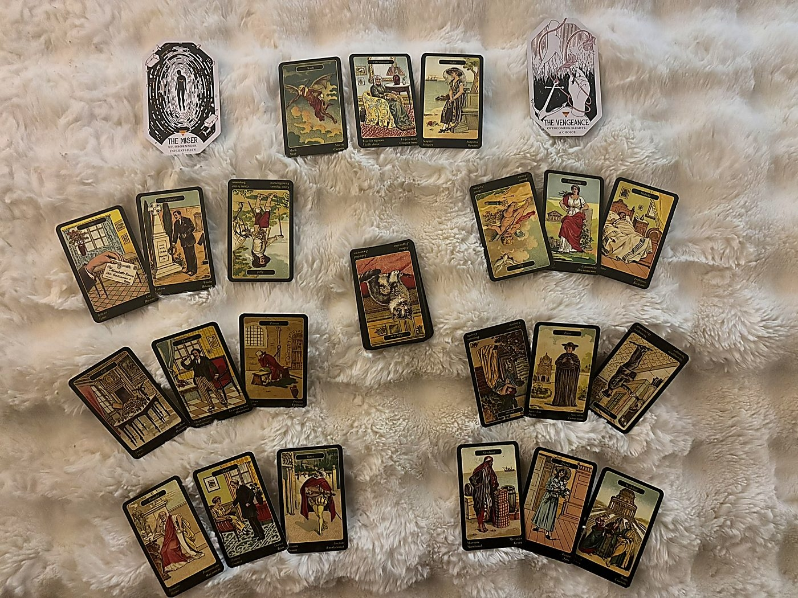

Key Influence — What's Beneath the Week
falseness reversed · the background frequency · what spirit wants you to hold
The Lie That's Losing Its Grip
Armani, welcome. Before we walk through the week itself, I want to set the stage with something that came up as the background energy for everything we're about to look at. This card sat at the bottom of the deck, which in the Sibilla system means it's the quiet undercurrent, the thing operating beneath the surface of every position we'll read. Think of it like the weather behind the weather.
The card is Falseness, reversed. Now, let me explain how reversals work in this deck, because it's different from Tarot. In the Sibilla, when a negative card shows up reversed, it doesn't flip to positive. Instead, it softens. The energy is still present, but it's passing, shrinking, becoming easier to detect. So upright Falseness would be active deception, something genuinely not what it seems, a situation or person wearing a convincing mask. Reversed, that mask is slipping. The deception is smaller in scale, or it's becoming transparent enough that you can see through it.
What this tells me is that the whole week carries a background energy of clarification. Something that wasn't fully honest, whether that's a situation you've been told a certain story about, a dynamic where someone (possibly you) has been performing something that doesn't match the interior reality, or simply a self-deception you've been carrying, all of that is losing its power this week. The lie isn't gone yet, but it's getting harder to maintain. You may find yourself noticing things more clearly than you have been, or feeling less willing to pretend.
Hold this as your lens: the week is asking you to see things as they actually are, not as you've been told they are, and not as you've been telling yourself they are.

Theme — The Shape of the Week
death · old woman · sighs
Something Old Is Ending, and the Ache of It Is Real
Let me walk you through how I read a three-card group in this system. Each position gets three cards, and I look at them three ways: individually left to right (the surface story), then the outer two cards framing the center (the center card is the pivot, the crux of the position), and then in pairs (first + second, then second + third) to see cause and effect. Then I blend all three lenses. It sounds like a lot, but it moves fast once you see it in action.
Your theme cards are Death, Old Woman, and Sighs. All upright.
Left to right, the surface narrative: a major transition or ending (Death), connected to an established older female figure or a long-standing situation that resists change (Old Woman), and the quiet longing or grief that comes from wanting something you don't yet have, or mourning something you're releasing (Sighs). If you're familiar with Tarot's Death card, the Sibilla version carries a similar meaning: transformation, necessary endings, the closing of a chapter. It's rarely literal. But unlike Tarot's Death, which often emphasizes the rebirth on the other side, the Sibilla's Death just names the ending itself and asks you to sit with it.
The center card, the pivot, is Old Woman. She's framed by Death on one side and Sighs on the other. This tells me the crux of your week's energy is something old, something with deep roots, something that has been the way it's been for a long time. It could be a literal older woman in your life, a grandmother figure, a matriarch, someone over sixty. Or it could be an old pattern, an old arrangement, an old way of being that has simply been in place so long it feels permanent. The framing says: this old thing is undergoing a transformation (Death), and there is genuine longing wrapped around it (Sighs).
The pairs: Death + Old Woman says the transformation is happening to or through this established energy. Something that has resisted change for a long time is finally shifting. Old Woman + Sighs says that this long-standing thing carries an ache, a quiet grief, a yearning quality. This isn't dramatic pain. Sighs is more like a long exhale, the kind of sadness that sits in your chest without shouting.
The week's overarching shape is a necessary ending tied to something deeply established in your life. There is grief in it, but it's the grief of release, not destruction. Something old is finally, quietly, moving.
Old Woman as a person card can represent a specific woman 60+ in the querent's life. If someone comes to mind, trust that. If not, read her as the energy of long-standing situations finally being asked to shift.
Positive Influences — Where Support Lives
letter · widower · lord reversed
News Arrives Through Someone Who Has Known Loss
This position shows where the week wants to help you. These are the supports available, the doors that open, the energies working in your favor. That said, when cards here show up reversed, it means the support is still real but it may be delayed or complicated. You have one reversal here, so the help is mostly accessible.
The cards: Letter (upright), Widower (upright), and Lord reversed.
Letter is awaited news, a communication, something arriving that changes the picture. Think of it as the Ace of Swords in Tarot terms, that moment of clarity cutting through, except in the Sibilla it's specifically about information arriving from outside you, something you receive rather than generate. Widower is a person card: an older man, sixty or above, marked by loss and grief. He's emotionally solitary, withdrawn by long habit, someone who rarely asks for what he needs. Upright, he's not hostile, just guarded and deeply private. Lord reversed is another person card: normally a wealthy or established older man, a patron figure, material support. Reversed, his energy is complicated. The resources or backing he represents may come with strings, or his attention may be directed more toward his own interests than yours.
The center card, the pivot, is Widower. He's framed by news arriving (Letter) and complicated material support (Lord reversed). This tells me: the support this week comes through or from a man who carries grief, someone older who has been through significant loss. He may reach out, or you may receive word connected to him. The Letter suggests this isn't a casual interaction. Something is being communicated that matters.
The pairs tell it clearly: Letter + Widower says news connected to this grieving older man. Widower + Lord reversed says his material support or practical influence is present but compromised somehow. Maybe he wants to help but can't fully, or the help he offers is filtered through his own limitations and self-interest.
Your support this week comes in the form of communication from or about an older man who carries real weight from past losses. The material dimension of this support is complicated, but the information itself is genuinely valuable. Receive the news even if the messenger is imperfect.
Negative Influences — Where Friction Lives
love reversed · constancy · malady
A Bond Under Strain That's Making Something Sick
This position names the difficulty, the friction, the places where the week pushes back against you. Not everything here is catastrophic. Sometimes this position just points to where energy gets stuck or where something needs honest attention. Let's look.
The cards: Love reversed, Constancy (upright), and Malady (upright).
Love upright in the Sibilla is deep lasting feelings, great affection meant to endure. Reversed, it speaks to the ending of a long relationship, or coldness, or an emotional door closing. This isn't casual dislike. This is the withdrawal or deterioration of something that was once genuinely deep. Constancy is the quality of lasting, the will to hold through difficulty. Upright, it's steadfastness. In this position, though, surrounded by these particular cards, constancy becomes the thing that makes the friction stick. Because someone, or something, is stubbornly holding on. Malady is illness, stagnation, something blocked at its root. Not a passing cold. Something that has settled in and isn't moving.
The center card is Constancy, and this is important. It means the core of this week's difficulty isn't the love dying or the illness. It's the holding on. The refusal to let go even when something has fundamentally changed. Love reversed and Malady frame Constancy on either side, telling us: what once was deep affection has cooled (Love reversed), and the determination to maintain it anyway, to keep holding what has shifted, is creating stagnation, blockage, something unhealthy (Malady).
The pairs: Love reversed + Constancy says a fading bond that someone is trying to keep stable through sheer will. Constancy + Malady says that same determination to hold is making something sick. The steadfastness isn't noble here. It's causing harm.
The friction this week isn't about something falling apart. It's about something that has already changed, and the refusal to acknowledge that change is creating stagnation. Loyalty to what was can become an illness when it refuses to let what is simply be what it is.
Notice how this echoes Position 1. The Theme said something old is ending and there's grief in it. Here we see the resistance to that ending. Death is asking for release; Constancy is gripping tighter. This tension is the week's central dynamic.
A Surprise — What Arrives Unexpectedly
gift · despair · prison
Something Good Arrives and Immediately Gets Complicated
This position is about what you don't see coming. Upright cards in this spot hit directly, without warning, and all three here are upright, so whatever this surprise is, it lands fully.
The cards: Gift, Despair, and Prison.
Gift in the Sibilla is genuinely good: unexpected fortune, something propitious arriving. It's not earned or scheduled. It just shows up. Despair, and I want to be precise here, is not general despair. The card's full Italian name is Disparato per gelosia, desperate due to jealousy. This is wounded-ego energy, the kind of crisis that comes from feeling overlooked, outpaced, or replaced. Prison is restriction, feeling trapped, confined circumstances with no obvious exit.
The center card is Despair. Framed by a genuine gift and a cage. This is striking. The pivot of the surprise isn't the good thing or the restriction. It's the jealousy response. Something good arrives this week, something real and unexpected, and it triggers a jealousy-driven crisis in someone (possibly you, possibly someone connected to you), and that crisis creates a feeling of being trapped.
The pairs: Gift + Despair says the good fortune itself provokes the jealous reaction. Someone receives something good and someone else spirals. Or you receive something good and your own wounded ego finds a way to turn it into proof of inadequacy rather than celebration. Despair + Prison says the jealousy leads directly to confinement, a sense of being stuck, boxed in, unable to move.
The surprise this week is double-edged: something genuinely good arrives, but it stirs up jealousy, either yours or someone else's, and that jealousy creates a trap. Watch for the moment when good news makes someone feel worse instead of better. That's the surprise announcing itself.
All three cards upright in a Surprise position means this lands with full force. There's no softening. The gift is real, the jealousy is real, the confinement is real. Preparation is your only buffer.
Challenge / Lesson — What the Week Asks of You
sorrow reversed · priest · messenger reversed
Grief That's Passing, a Spiritual Authority, and a Message That Hasn't Landed
This position names the growth edge, the thing the week is actively teaching you whether or not you signed up for the class. It's not punishment. It's curriculum.
The cards: Sorrow reversed, Priest (upright), and Messenger reversed.
Sorrow in the Sibilla is direct grief, emotional weight. Unlike some other systems, Sibilla's Sorrow doesn't tell you where the grief came from or where it's going. It just names its presence. Reversed, the sorrow is still here but reduced, passing, not permanent. Priest upright is spiritual authority, ritual, devotion, someone who holds sacred space. This can be a literal person in a spiritual role or the energy of faith, tradition, and structured belief. Messenger reversed is a person card: someone whose job it is to carry information between parties. Reversed, the news is delayed or distorted in transit. Something that was supposed to reach you, or reach someone else through you, isn't arriving clean.
The center card is Priest. He's framed by passing grief and garbled communication. The lesson lives in him. The week is asking you to find or hold some kind of spiritual grounding, some devotion to something larger than the immediate emotional turbulence, and to do this while grief is receding on one side and communication is failing on the other. The Priest stands between imperfect information and fading pain, holding steady.
The pairs: Sorrow reversed + Priest says the grief that's easing is connected to something faith-related, or that spiritual practice is part of what's helping the grief pass. Priest + Messenger reversed says there's something the Priest figure knows or represents that isn't getting through to you clearly. The message is there. The delivery system is broken.
The lesson: your grief is passing, but the clarity you need to complete that passage is being delayed or distorted. Don't wait for perfect information. Find your grounding in faith, practice, devotion, whatever your version of the sacred is, and let that carry you while the messages sort themselves out.
Advice — What to Carry This Week
thought · doctor · lover
Think It Through, Trust the Expert, Stay Open to the One Who Shows Up
This is the action position, what the cards are actively telling you to do. All three upright, which means the advice is direct and unblocked.
The cards: Thought, Doctor, and Lover.
Let me flag something about Thought. In this system, Thought doesn't automatically mean your thoughts. It represents ideas, doubts, plans circling in a situation, and they could belong to anyone. As advice, though, it's pointing more directly at you: think before you act, consider carefully, let the ideas circulate before you commit. Doctor is a person card: professional authority, someone who diagnoses clearly, competent and trustworthy and calm under pressure. This isn't about literal medical care (unless it is, in which case, don't delay). It's about seeking or trusting someone who has expertise you don't, someone who can look at a situation and tell you plainly what's going on. Lover is another person card: an unmarried man roughly 30 to 45, romantically significant. Upright, he's warm, present, arriving with positive energy.
The center card is Doctor. He's the pivot of the advice. Framed by careful thought on one side and a warm romantic figure on the other, the Doctor says: this week needs clear diagnosis more than it needs emotion. The Thought says think. The Doctor says consult someone who knows. The Lover says stay emotionally open and receptive to someone who's showing up for you. But the Doctor in the middle says: let clarity lead.
The pairs: Thought + Doctor says careful analysis paired with expert counsel. Don't just think about it alone. Bring your thinking to someone competent and let them refine it. Doctor + Lover says there's something to be diagnosed or clarified in a romantic connection, or that a romantically significant man is someone you can trust this week in a practical, clear-eyed way.
The advice is layered: slow your thinking down, seek expert input on what's actually going on, and don't shut the door on the person who's arriving with warmth. Head first, then heart. Not heart instead of head.
Synthesis — How the Week Lands
merchant · friend · wedding
Something Solid Takes Shape Between Good People
This is where the week arrives at the end. Not what it asks of you, not what challenges you, but how it all settles. These three cards read together on their own terms, as the final picture. All upright.
The cards: Merchant, Friend, and Wedding.
Merchant is a person card associated with work, career, practical dealings, business arrangements. He represents the professional dimension of life, things that function, structures that produce. Friend is a female person card: a generous, supportive ally who acts from goodwill without asking for return. Upright, she is exactly what she appears to be. Wedding in the Sibilla isn't only marriage. It's union, commitment, any formal agreement or contract. Something being made official, two things joined in a way that holds.
The center card is Friend. She's the heart of how the week lands. Framed by a practical business energy (Merchant) and a commitment being formalized (Wedding), the Friend says: the week resolves through genuine alliance, through a woman who shows up with real goodwill, and through something being made official or solidified in the professional realm.
The pairs: Merchant + Friend says a business or practical connection supported by a genuine female ally. This might be a colleague, a business partner, someone who advocates for you professionally out of real loyalty. Friend + Wedding says this supportive woman is connected to a commitment, an agreement, something being sealed. She may facilitate it, celebrate it, or be party to it.
After all the grief, the holding on, the jealousy, and the stalled messages, the week lands somewhere surprisingly solid. A professional arrangement comes together. A loyal woman plays a key role. Something gets committed to, formally and genuinely. The ending is better than the middle.
The week moves from Death (necessary ending) through resistant grief, jealousy, and communication breakdown, and arrives at Merchant + Friend + Wedding: practical partnership, real loyalty, formalized commitment. The old thing needed to end so this new structure could take shape. The synthesis cards confirm the transformation the Theme promised.
Citadel Oracle — The Energies to Work With
the miser · the vengeance · what to cultivate and what to manage
The Miser — Count What You Actually Have
The Miser of the Citadel counts their holdings at night when everyone else is asleep. They do not count from abundance -- they count from fear. Every coin, every resource, every advantage is held tightly because the terror of loss has displaced the possibility of trust. The hoard grows, but the Miser does not feel rich. They feel perpetually on the edge of not having enough.
UPRIGHT: A scarcity mindset is governing your decisions right now, and it is costing you more than generosity would. What would it mean to trust that there is enough? What would you do differently if you operated from abundance rather than fear of loss?
— The Citadel Oracle
Now, the Citadel Oracle works a little differently from the Sibilla. It names archetypes, roles, energies you're being asked to step into or contend with. The "Energy to Cultivate" card isn't telling you to become the Miser. It's pointing at the Miser's core skill and saying: there is something here you need this week.
And what the Miser knows is exactly what they have. They've counted. They know every resource, every asset, every advantage down to the last coin. The shadow of this, the scarcity fear, the hoarding, that's what to avoid. But the skill itself, careful resource management, knowing your actual position, not spending from hope, is exactly what this week requires. Look at what showed up in the Sibilla: Death, endings, an older situation transforming, a Gift that triggers jealousy, a professional commitment forming at the end. This is a week of transition, and in transitions, you need to know precisely what you're working with. Not what you wish you had. Not what you're afraid of losing. What you actually, concretely, possess.
The Constancy card in Position 3 showed someone holding on from sheer will. The Miser's shadow does the same, gripping resources out of fear. The week is asking you to count clearly without clutching. Know your inventory. Trust that it's enough. Then let the transition do what it needs to do.
Cultivate the Miser's precision without the Miser's fear. Know exactly what you have. Then open your hands.
The Vengeance — The Score That Doesn't Need Settling
The tavern is busy, full of conversation and the bustle of travellers settling for the evening. One figure catches your attention: someone who is not drinking, talking, nor engaging with the rest. They say nothing, but you know that they have a deadly score to settle. When the opportunity presents itself, will they let the past consume them, or will they finally accept things for what they are and move on?
UPRIGHT: The Vengeance has a choice, and so do you. Though the chains of anger have been giving you the energy to move forward, their weight will eventually drown you -- it is time to address those negative feelings and find a healthier way to sustain your drive. Letting go of bad emotional patterns might leave you feeling empty and drained, but you can fill that void with healthier adjustments that will help you build more positive relationships.
— The Citadel Oracle
The "Understand / Manage" card points at the shadow operating around the challenges, the energy that's in play whether you invited it or not. This one needs to be worked with, not just fought against.
The Vengeance names something the Sibilla already showed you. Look at Position 4: Gift + Despair + Prison. Something good arrives and immediately triggers jealousy-driven crisis. Despair in the Sibilla is specifically wounded-ego energy, the feeling of being outpaced or replaced. The Vengeance takes that same wound and adds a blade to it. There is someone in the dynamic this week, possibly you, who has a score to settle. Not necessarily a dramatic vendetta. Sometimes vengeance is quieter than that. It's the part of you that keeps track of who hurt you, who got what you didn't, who failed to show up. It's the figure in the tavern who isn't drinking and isn't talking but is watching, waiting, calculating.
The Oracle's message is clear: that anger has been fuel. It's been driving something. Maybe it drove you to work harder, to protect yourself more fiercely, to refuse to be overlooked. But the chains of anger are getting heavier than the momentum they provide. This week, especially as something old ends (Position 1) and something new formalizes (Position 7), you have a choice about whether to carry the old score into the new structure.
The Priest in Position 5 stands in the center of the lesson for a reason. He represents faith, devotion, something sacred. The Vengeance is the opposite energy: the refusal to release, the insistence that justice must look like punishment. The week is asking you to choose the Priest over the Vengeance. Not because the anger was wrong, but because the new thing forming, that Merchant + Friend + Wedding energy, cannot be built on a foundation of scores being settled.
The anger was real. What happened to you was real. But carrying it forward will poison the very thing that's trying to take shape this week. You don't have to forgive on command. You just have to set the blade down long enough to sign the new agreement with clean hands.
Full Synthesis — The Week as a Whole
all positions woven · the story beneath the story
The Old Contract Ends. The New One Awaits Your Signature.
Armani, here's the full picture.
This week opens under Falseness reversed: something dishonest is losing its grip, becoming transparent, getting easier to see through. That's the lens for everything. The truth is emerging whether anyone is ready for it or not.
The shape of the week is an ending. Death and Old Woman and Sighs tell you plainly: something old, something that has been in place a long time and has deep roots, is undergoing its final transformation. There is real grief in this. Not dramatic grief, but the quiet, chest-heavy kind, the long exhale of releasing what you've known. This might be a relationship, a living situation, a family dynamic, a way of seeing yourself. The Old Woman says it's been here longer than you might realize.
The difficulty is that someone, possibly you, is gripping what's already changed. Love reversed paired with Constancy paired with Malady is the clearest warning in the reading: holding onto what has already cooled is making something sick. The affection faded. The loyalty didn't. And that mismatch is creating stagnation, blockage, a kind of spiritual illness that comes from forcing life to be what it was instead of what it is. The Miser's shadow operates here too, clutching what's familiar out of fear that there won't be enough on the other side.
Midweek, something genuinely good arrives. The Gift is real. But it detonates a jealousy response, Despair, that leads to feeling caged, Prison. This is where the Vengeance energy lives. The good fortune pokes a wound, and the wound says but what about what I lost, what about what was taken, what about what I never got. If you're not careful, the gift becomes the trigger for the very confinement you're trying to escape. Watch for the moment when something good makes you or someone near you feel worse. That's the moment to choose differently.
The lesson asks you to find spiritual grounding, the Priest, while grief is easing and messages are garbled. You won't have perfect information this week. The Messenger is reversed. Something isn't getting through clearly. The advice says: think carefully, consult someone competent, and stay open to the warm presence that's showing up for you. The Doctor in the center of the advice position is the week's most
This reading closes Sunday, April 12 · Midnight
After April 12th, this page will display a closing message and the reading will no longer be accessible. If you’d like to revisit a past reading or book a new session, reach out directly.